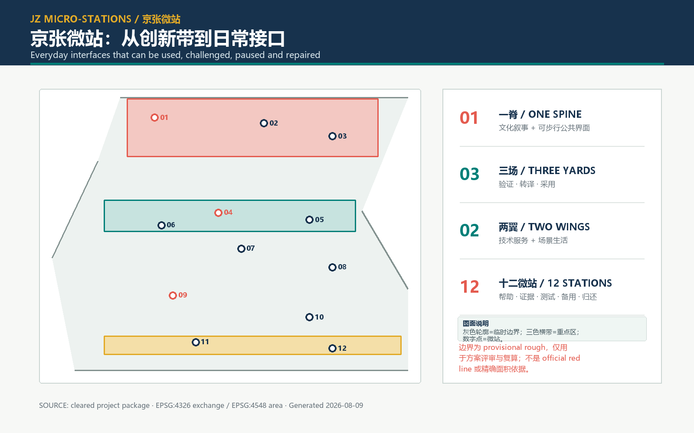

三层范围
43.6 km² 研究视野 · 约 11.4 km² 临时总体设计范围 · 3 个临时重点区域
一条脊线 · 三个场域 · 两翼协同 · 十二微站 · 四条缝合门

43.6 km² 研究视野 · 约 11.4 km² 临时总体设计范围 · 3 个临时重点区域
众智园研发验证场 · 北京 AI 原点社区技术转译场 · 大钟寺 AI 产业集群服务采用场
0802 科研 · 05 商业服务 · 1401 公园绿地 · 0702 社区服务；仅为概念拓扑
1 条南北慢行脊 · 4 条东西缝合门 · 2 条局部环线；道路红线待核
文化叙事脊 · 降温连接带 · 12 个口袋绿地 · 雨水花园边缘
12 个可拆卸微站体量；保留、改造、适应性新建均为待核选项
8 个责任项目卡 · 3 期闸门式交付 · 退出资金与维护归还机制
12 张场景卡 · 4 项产业测试 · 6 类人才画像 · 人工复核 · 无 AI 备用流程
官方公告、清权任务书、住建部与自然资源部标准快照、临时几何依据及 7 个机制案例页面。详见 sources.json。
边界、重点区范围、法定控制、权属、道路红线、建筑基线、遗产清单和市政设施均作为明确假设或数据缺口记录。详见 assumptions.json。